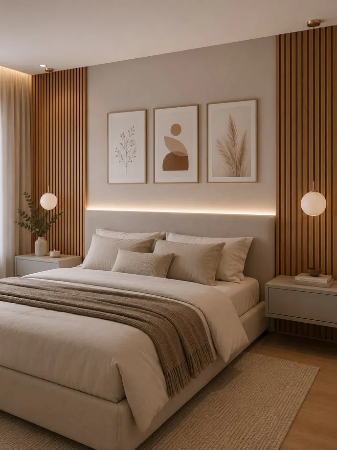
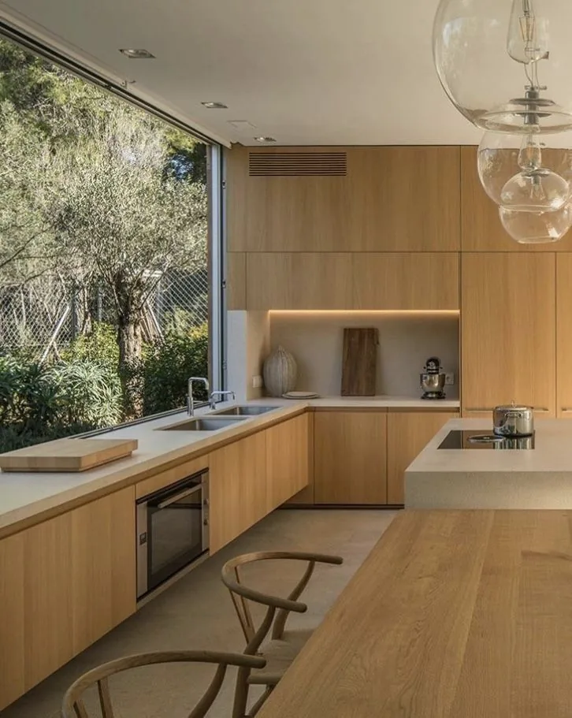

Lakossági fókusz
Kizárólag lakások, családi házak és magánszemélyek otthoni igényeinek kiszolgálására koncentrálunk Győrben és a környező településeken.
Professzionális lakás- és háztakarítás Győrben, kizárólag magánszemélyeknek. Alkalmi vagy rendszeres segítséget keres? A Diamond Takarítás csapata az Ön igényeihez és időbeosztásához igazodik.

Az otthon tisztasága nemcsak esztétikai kérdés: kényelmesebb, nyugodtabb mindennapokat teremt. A Diamond Takarítás célja, hogy Önnek kevesebb teendője és több szabadideje legyen – egyéni igényeire szabott, gondos takarítással.
Kizárólag lakások, családi házak és magánszemélyek otthoni igényeinek kiszolgálására koncentrálunk Győrben és a környező településeken.
Egyeztetett időpontban érkezünk, így a takarítás illeszkedhet a munkaidőhöz, családi programokhoz vagy egy közelgő eseményhez.
A szükséges feladatok, az ingatlan mérete és a kívánt gyakoriság alapján átlátható, személyre szabott ajánlatot készítünk.
Válasszon egyszeri alapos takarítást vagy rendszeres segítséget. Igény szerint az alábbi szolgáltatásokat külön-külön vagy egymással kombinálva is kérheti.
Ideális költözés, vendégvárás, ünnepi készülődés, felújítás utáni rendbetétel vagy egy régóta halogatott nagytakarítás előtt. A feladatlistát előre egyeztetjük, hogy pontosan azt kapja, amire szüksége van.
Heti, kétheti vagy havi rendszerességgel is kérhető szolgáltatás. A rendszeres takarítás segít abban, hogy otthona folyamatosan rendezett és kellemes maradjon, Önnek pedig ne kelljen minden alkalommal újraterveznie a teendőket.
A szolgáltatás tartalmát mindig az ingatlanhoz és az Ön kéréseihez igazítjuk. A tipikus feladatok közé tartozik a porszívózás, felmosás, portalanítás, a konyha és fürdőszoba tisztítása, valamint a szemetesek ürítése.

A Diamond Takarítás Győr teljes területén vállal lakossági takarítást.
A környező településeken történő munkavégzés lehetőségéről kérjen egyedi tájékoztatást az ajánlatkérés során.
Írja meg, milyen ingatlanról, milyen feladatokról és milyen gyakoriságról van szó. Az adatok alapján személyre szabott ajánlatot készítünk.
Alkalmi, heti, kétheti vagy havi rendszerességgel is kérhető. A legjobb gyakoriság az ingatlan méretétől, a háztartás létszámától és az egyéni igényektől függ.
Ezt az ajánlatkéréskor szükséges egyeztetni.
A végleges ár az ingatlan méretétől, állapotától, a feladatok körétől és a kívánt gyakoriságtól függ. Kérjen ingyenes, kötelezettségmentes egyedi ajánlatot.